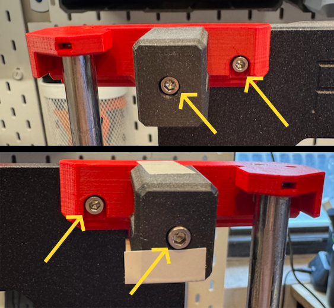
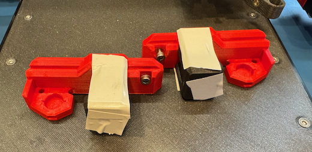
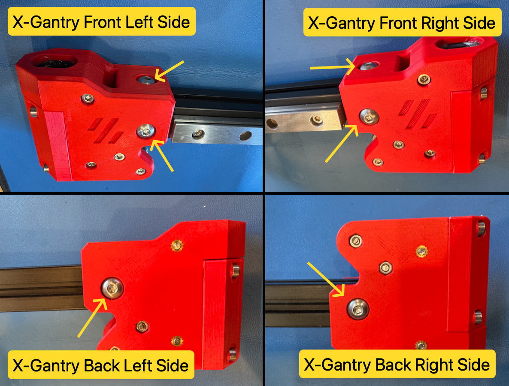
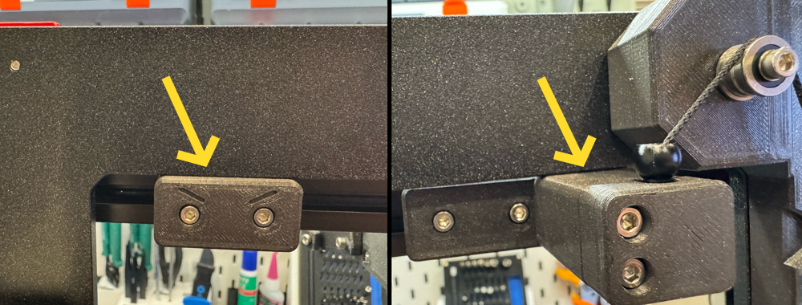
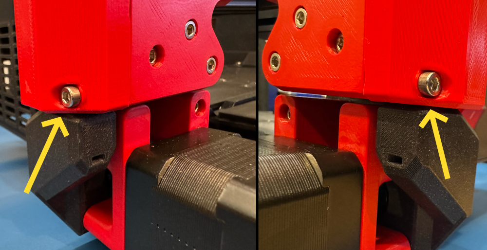

Gantry Deracking
Table of contents
Current Compatibility: Prusawire - Beta 1
Overview
The gantry de-racking procedure is critical to ensure smooth motion in X and Z. The general idea is to loosen certain screws on the gantry, bump the bottom of the gantry against the X and Z motor joints to align, and tighten the screws.
Prerequisites
- Confirm your frame geometry is square: Frame Assembly - Geometry Check
- The following should be assembled already:
- Frame
- Z-Axis
- X-Gantry with toolhead mount
- You should be ready to belt both the X and Z axis.
Instructions
- Remove the toolhead from the carriage mount (if currently installed).
- For Stealthburner, see the Stealthburner assembly manual for instructions.
- Remove the bed, y-carriage, and y-rods completely off the printer (if currently installed).
-
Remove the bumper block and door puller block from the back of the gantry (if currently installed).

- Remove the top left idler assembly and top right idler assembly loosening the M3 SHCS on each.
- TIP: A small piece of tape on the top and bottom of the assembly can be used to help keep the bearing stack together.
 
- Remove the x-gantry assembly from the printer by lifting it up off the z-axis rods.
-
Loosen all six M5 BHCS from each side of the x-gantry assembly.

- Ensure each end of the 2020 extrusion is seated ALL the way into the printed parts.
- Re-install the x-gantry assembly onto the printer by sliding it onto the z-axis rods from the top.
- Move the x-gantry assembly up and down a few times to allow parts to settle.
-
Lower the x-gantry assembly until it bumps against the X and Z motor mounts.

-
Tighten the two top M5 BHCS on the x-gantry assembly, followed by the two front M5 BHCS.

-
Raise the x-gantry assembly up to the top just high enough to be able to tighten the rear two M5 BHCS.

- Lower the x-gantry assembly back down to the bottom.
- Re-install the top left idler assembly and top right idler assembly by tightening the two M3 SHCS on each.
- Re-install the bumper block and door puller block on the rear of the gantry.
-
Move the gantry up and down. You shouldn’t feel any resistance.

- When the gantry bumps the top of the frame, it should bump equally on both sides.

- When the gantry bumps the bottom (X motor mount and Z motor mount), it should bump equally on both sides.

- Check for any gantry racking a final time after installing XZ belts (and prior to installation of Y-axis). Adjust front/top M5 screws if needed.